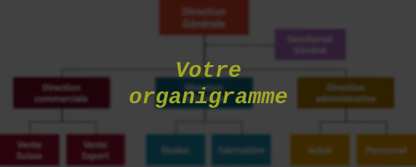

L'organigramme
Inscription
Pour vous inscrire dans l'établissement vous devez remplir les documents suivants.
Les formulaires d'inscription
Nos documents internes
Les instances
Le Conseil d'Administration
Le Conseil d'Administration définit la politique générale de l'établissement et
délibère sur les projets de travaux de l'établissement, le budget, les tarifs, et sur l’organisation
générale de l'établissement.
Le Président du Conseil d'Administration de la Maison de Retraite est le maire ou son représentant.
La composition du Conseil d'Administration est fixée par décret. Il se réunit 4 fois par an.
Le Comité Technique d'Etablissement
Le Comité Technique d'Etablissement est composé du Directeur et de représentants des
personnels. Le Directeur préside ce comité.
Le Comité Technique d'Etablissement est obligatoirement consulté sur tous les projets de travaux, les
budgets et le tableau des effectifs du personnel, les conditions et l'organisation du travail et le plan
de formation.
Le Conseil de la Vie Sociale
Le Conseil de la Vie Sociale est une instance d’expression des résidents et de leurs
familles donnant son avis sur toutes les questions relatives à la vie dans l’établissement.
Il est composé de représentants élus ou désignés pour 3 ans. Leurs noms sont portés à la connaissance
des résidents par voie d’affichage.
Le Conseil de la Vie Sociale se réunit 3 fois par an.
La Commission Menus
Vous êtes invités à participer aux commissions des menus afin d’exprimer vos souhaits
et vos remarques sur les menus servis.
La Commission des menus se réunit tous les semestres. Le Directeur et le Responsable Cuisine participent
à cette réunion.
Le Comité d’Hygiène, Sécurité et des Conditions de Travail
Le CHSCT a une compétence générale en matière de surveillance de l’hygiène et de la sécurité. Il se réunit 2 fois par an.
La Commission Qualité
L’établissement est inscrit dans une démarche d’amélioration continue de la qualité qui
amène chaque professionnel de l’établissement à s’interroger sur ses pratiques et à tendre vers les «
bonnes pratiques professionnelles », émises par l’ANESM (Agence nationale de l’Évaluation et de la
qualité des établissements et services sociaux et médico-sociaux).
Cette démarche a permis de protocoliser et donc de sécuriser l’ensemble des actions des professionnels
de l’établissement.